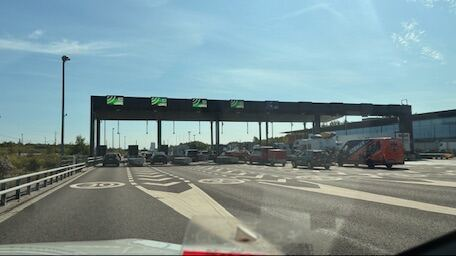
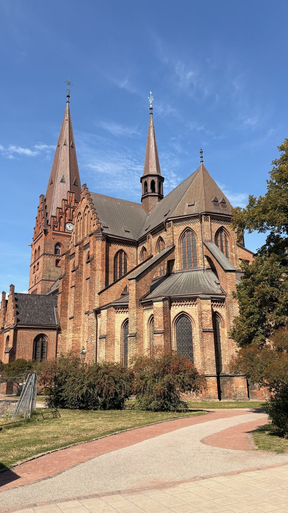
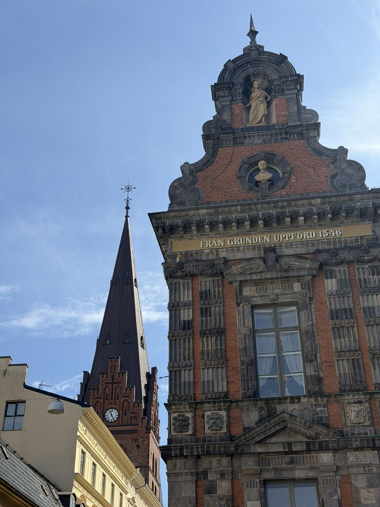
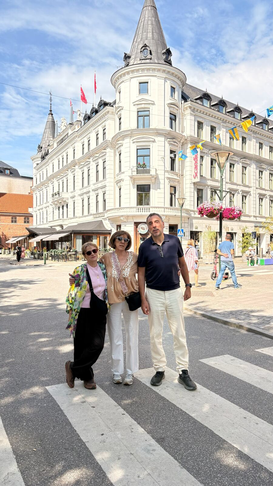
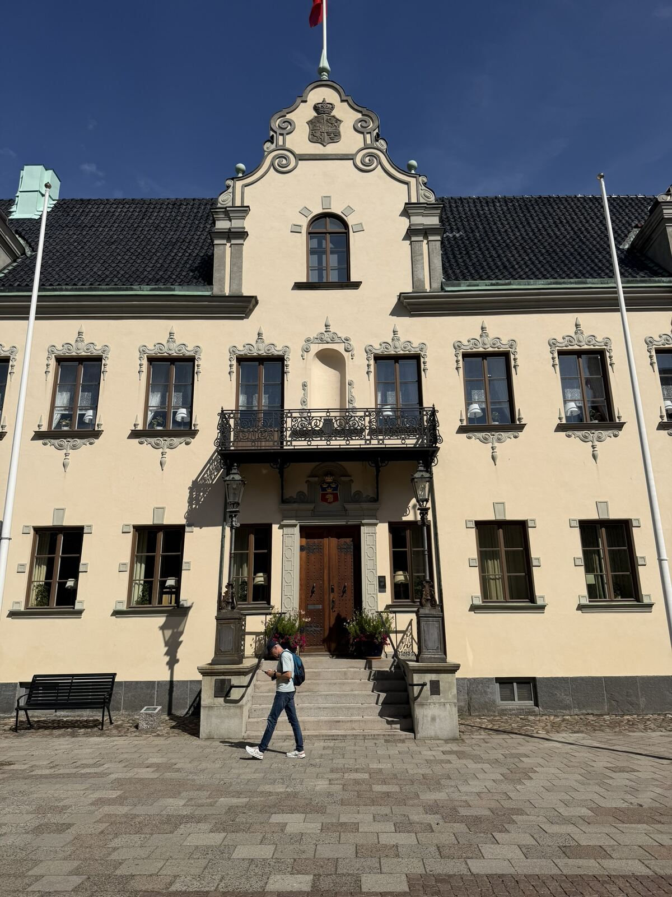
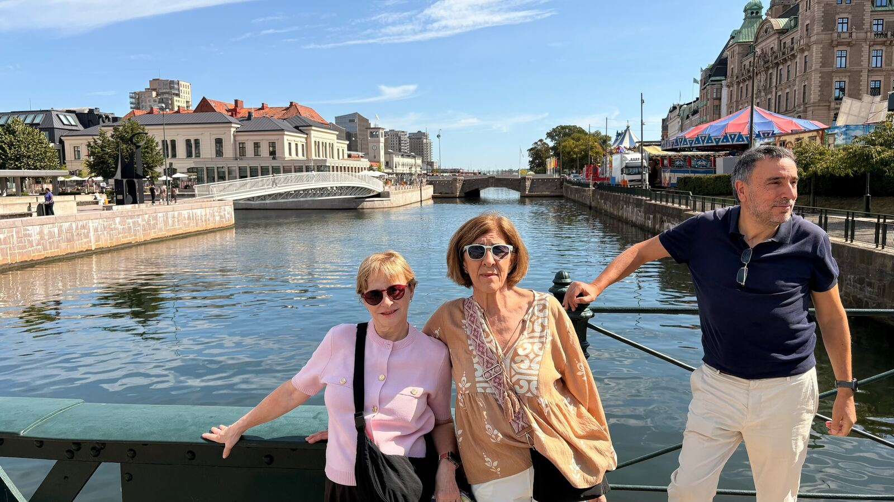
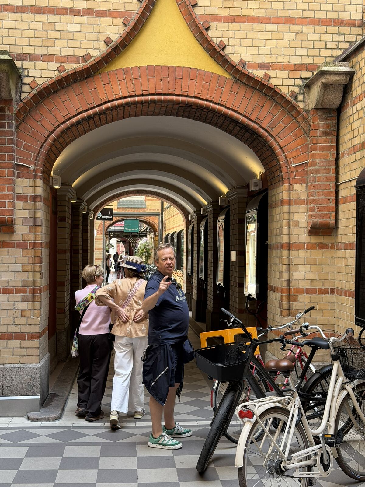
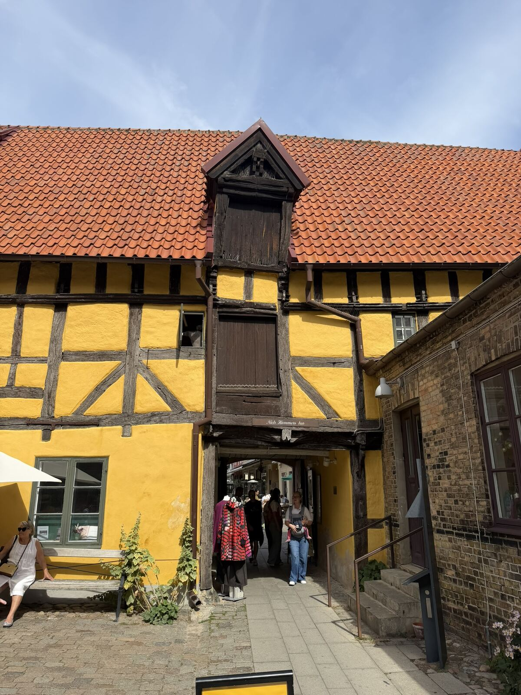
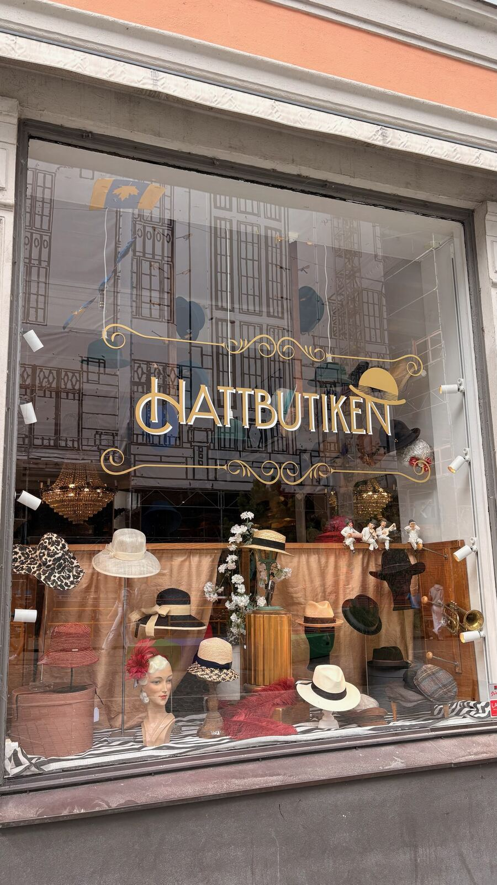
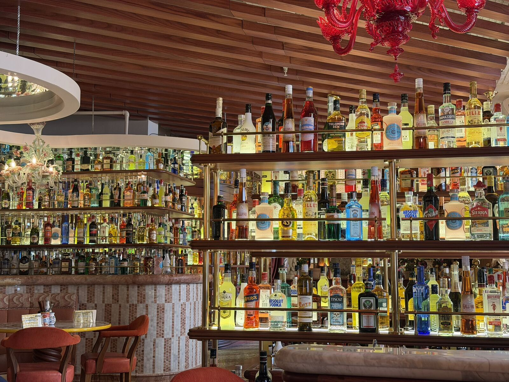

Un día entero en Suecia porque el puente estaba ahí y, ya que lo habíamos pagado, había que rentabilizarlo. Malmö resultó ser una ciudad muy digna a la que fuimos a comprar un sombrero.

El puente a Malmö es el más caro de Europa. Lo cruzamos para poder decir que hemos estado en Suecia.

La iglesia de San Pedro.

Fachada del ayuntamiento de Malmö, levantado en 1546, con la torre de la iglesia de San Pedro al fondo.

El Hotel Kramer, en la plaza Stortorget.

El ayuntamiento (Rådhus), también en Stortorget.

Tres de nuestros protagonistas fingiendo que llevan toda la vida posando así.

Un pasaje del centro con más bicis aparcadas que gente.

Niels Hammers hus, una casa de entramado del siglo XVI en el casco antiguo.

Objetivo del día cumplido: comprar un sombrero y estar de cháchara un rato con la dependienta de la Hattbutiken.

Aquí comimos, un restaurante kitsch con muchas botellas de colores.